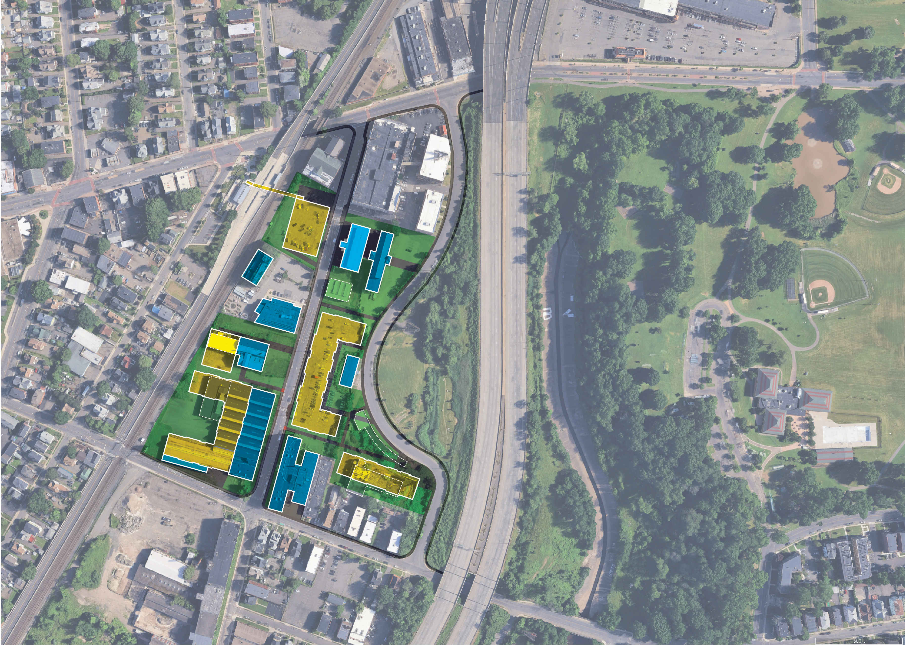
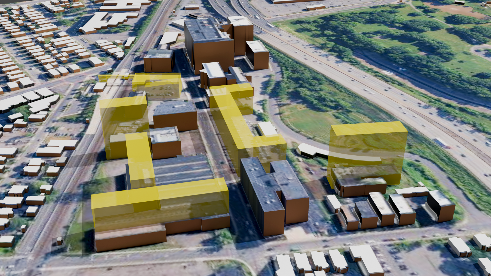
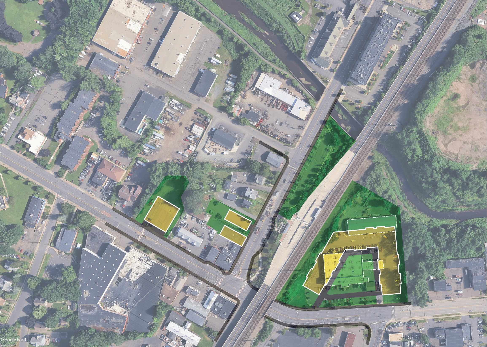
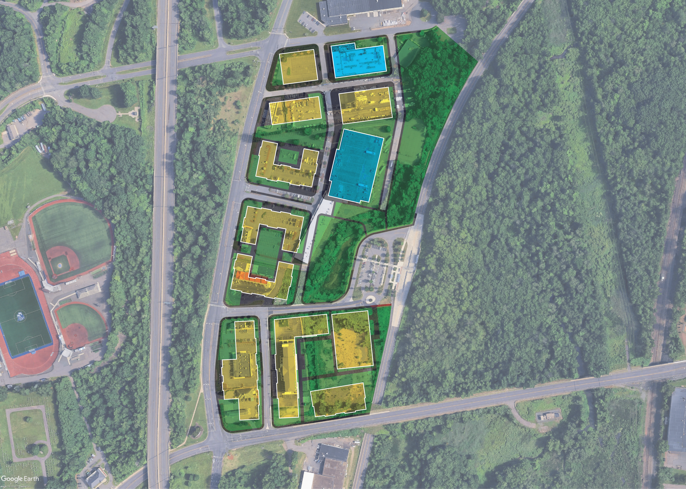
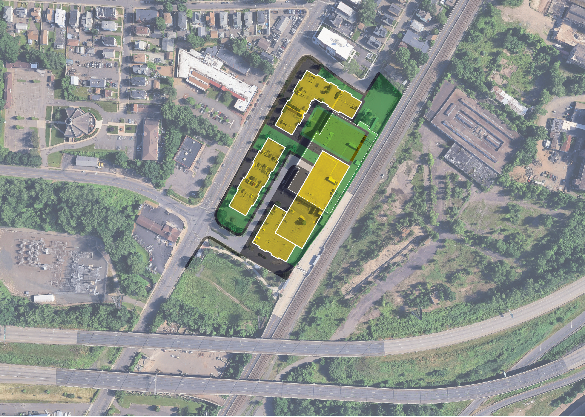
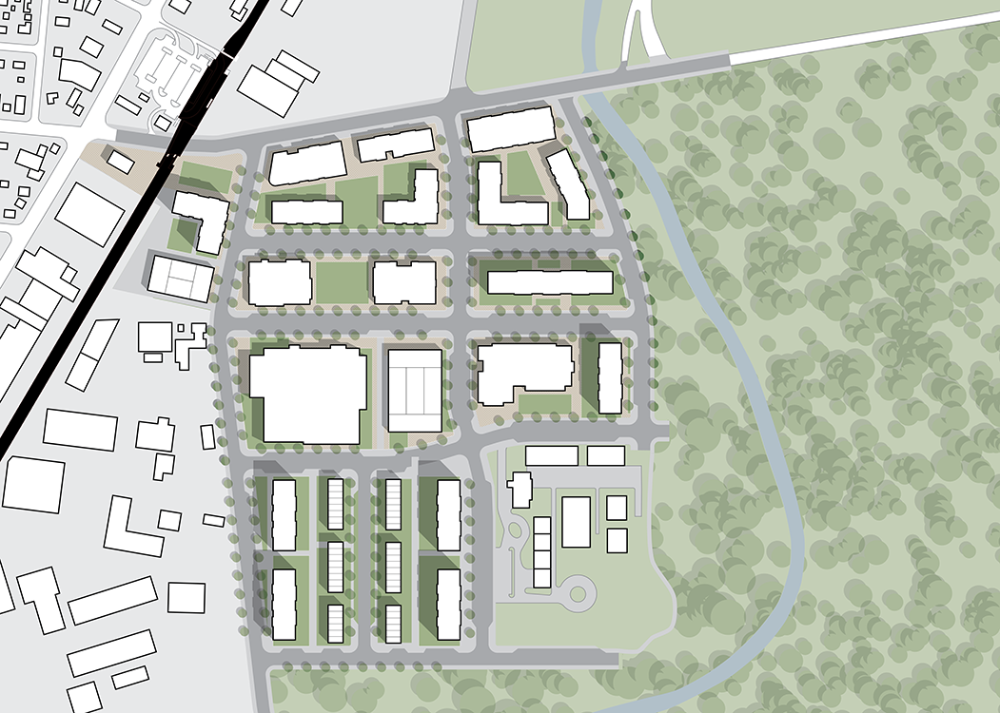

The big idea
Treat the busway as more than transportation infrastructure. The study used each station as a framework for reshaping nearby land use, public space, access, and development so that transit investment could also support neighborhood and economic revitalization.
Link transportation and development
Coordinate station planning with surrounding land use and redevelopment rather than designing each stop as an isolated facility.
Respond to each station context
Use station-specific plans instead of a single corridor-wide formula, reflecting different neighborhood, commercial, and development conditions.
Make walking central to the plan
Improve pedestrian connections, crossings, streetscape, orientation, and public space so nearby destinations are meaningfully connected to transit.
Connect design to implementation
Pair physical planning with market conditions, regulatory tools, phasing, and public-private investment strategies.
From corridor strategy to station-area design
The work began by comparing station areas across the corridor, then developed more detailed plans where transit access and redevelopment potential could reinforce one another. The resulting concepts organize new development, streets, pedestrian routes, public spaces, and station access as a coordinated urban framework.





Use transit investment to shape incremental redevelopment
Station plans were conceived as implementable frameworks rather than fixed end-state designs. They identify how near-term access and development improvements can build toward a denser, more connected transit-oriented district over time.
